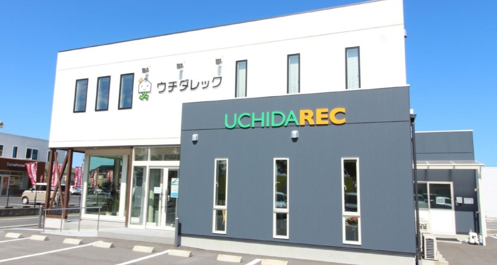
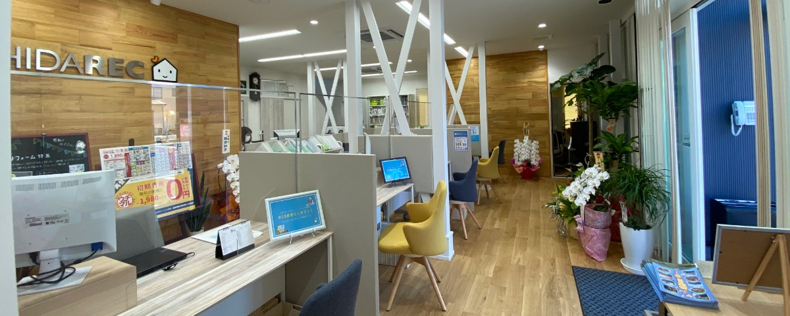

松江市のガス代が
高いと感じたら
無料で見直し・比較。
検針票をスマホで撮って送るだけ。
「なんとなく高い気がする」その疑問を、
創業50年の地域密着企業が
プロの視点で診断します。
差額シミュレーション
※一般的な戸建て住宅（4人家族）の使用量に基づいた試算例です。
実際の削減額を保証するものではありません。
松江市のガス料金は
比較するとこれだけ違う
LPガスは「自由料金」です。
スーパーで野菜の値段が店ごとに違うように、
ガス会社によって基本料金も従量料金も異なります。
「ずっと同じ会社だから安心」と思っている間に、
相場より高いガス料金を支払っているケースが少なくありません。
実は、ガス会社は自由に選べます
スーパーで野菜を選ぶように、ガス会社も安くて安心なところを選べるってご存知でしたか？
まずは「今の料金が適正か」を知ることから始めましょう。
安さと安心の
論理的な理由
「ただ安い」だけではありません。
実店舗を構える不動産管理会社としての確かなバックボーンがあるからこそ、
適正な価格設定を維持できます。

圧倒的なスケールメリット
創業50年以上、特に米子エリアでは管理実績No.1。この強固な地域基盤と規模を活かした大量仕入れによるコストダウンを、戸建てのお客様にも還元しています。

高効率な運営体制
「DXマーク認証」取得など、メディアでも注目の業務効率化（DX）をガス事業にも展開。徹底したペーパーレス化などで無駄なコストを削減し、その分を料金の安さとして還元しています。
メディア掲載実績はこちら大手供給元 × 地域密着
大手ガス会社からの安定供給ルートを確保しつつ、窓口は私たち地域スタッフが担当。「顔の見える」安心感と、中間コストを抑えた構造を両立します。
地域とともに50年。
地域トップシェアの実績が、私たちの誇りです。
ウチダレックは、地域の皆様の「住まい」と「暮らし」を支え続けてきました。ガス料金だけでなく、住まいに関するあらゆるご相談に対応できる体制を整えています。
よくあるご質問
Q. ガス会社の変更に費用はかかりますか？
A. 基本的に手数料はかかりません。
現在のガス会社の解約手続きや、ボンベ・メーターの撤去・設置工事費は、原則として当社が手配・負担いたします。Q. 「違約金」がかかると言われたのですが…
A. 契約内容によっては清算金が発生する場合があります。
「無償貸与契約」がある場合などです。無料診断時にこの点も含めて確認し、お客様が損をするような切り替えはご提案しません。簡単3ステップで完了
検針票を撮影
直近のガス料金がわかる
請求書等をスマホで撮影します。
LINEで送信
公式アカウントを友だち追加し、
写真を送信してください。
結果を確認
専門スタッフが適正価格と比較し、
結果をご返信します。
まずは現状を知ることから。
診断結果を見るだけでもOK。無理な勧誘は一切ありません。
「ガス料金、高いかも？」と思ったら、お気軽にご利用ください。
提供：株式会社ウチダレック